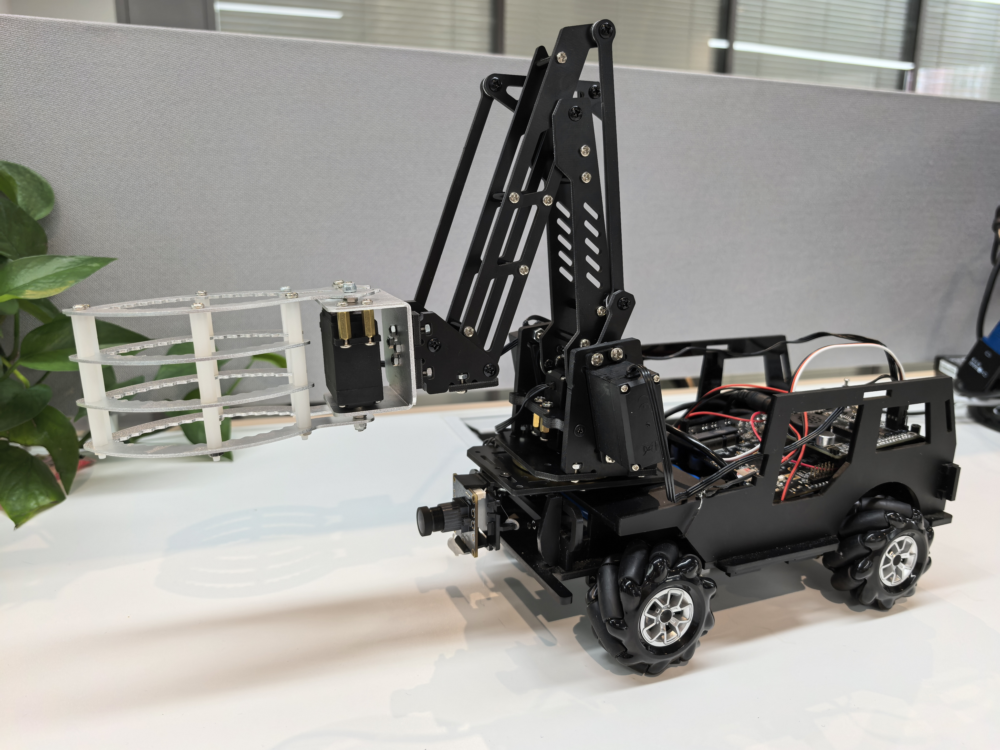
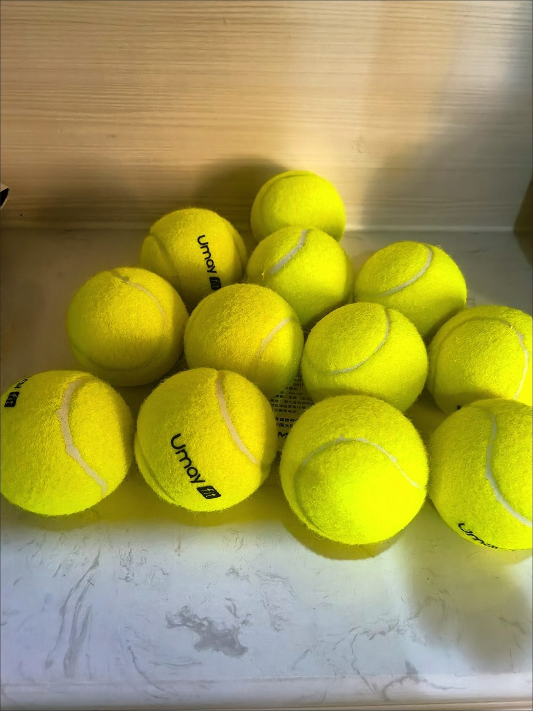
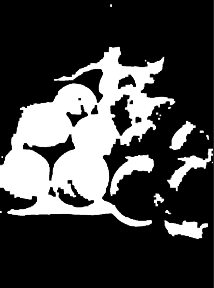
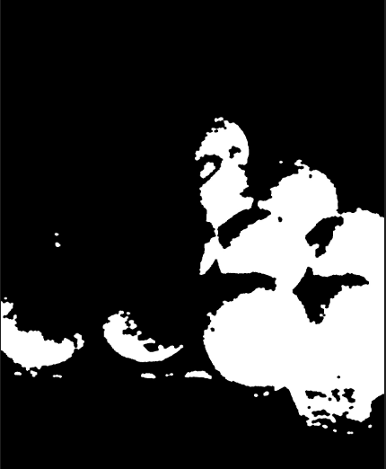
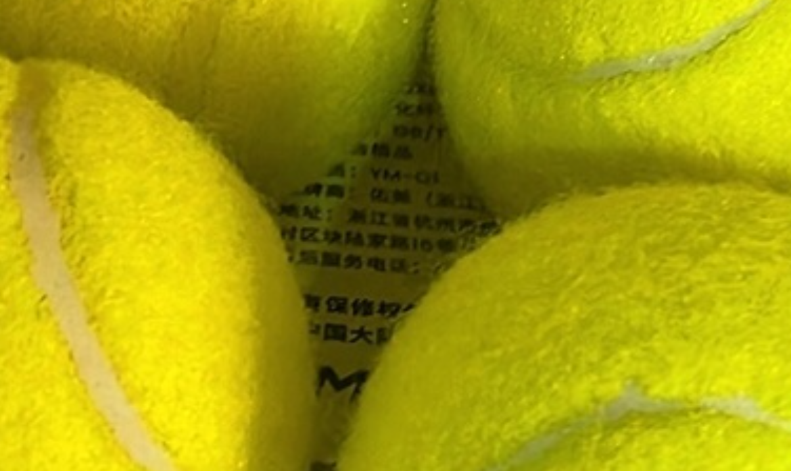
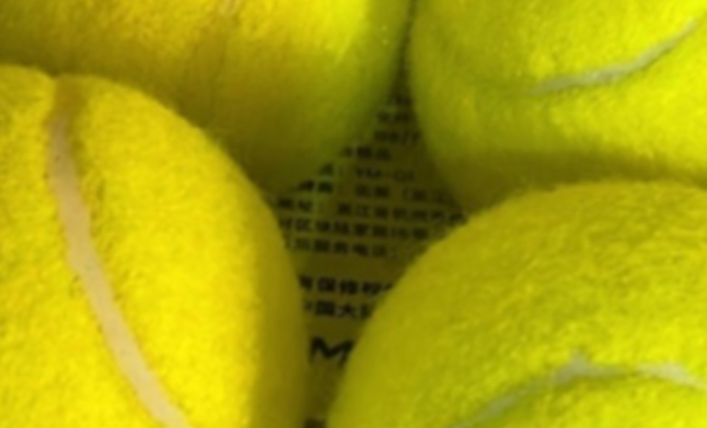
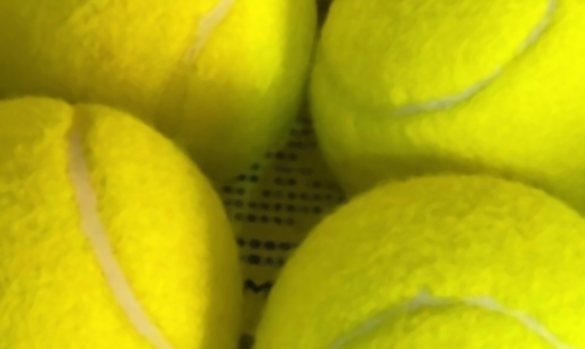
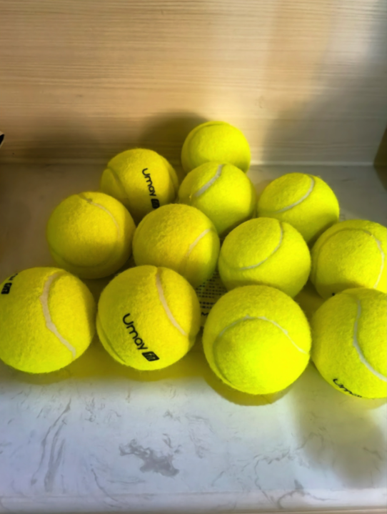
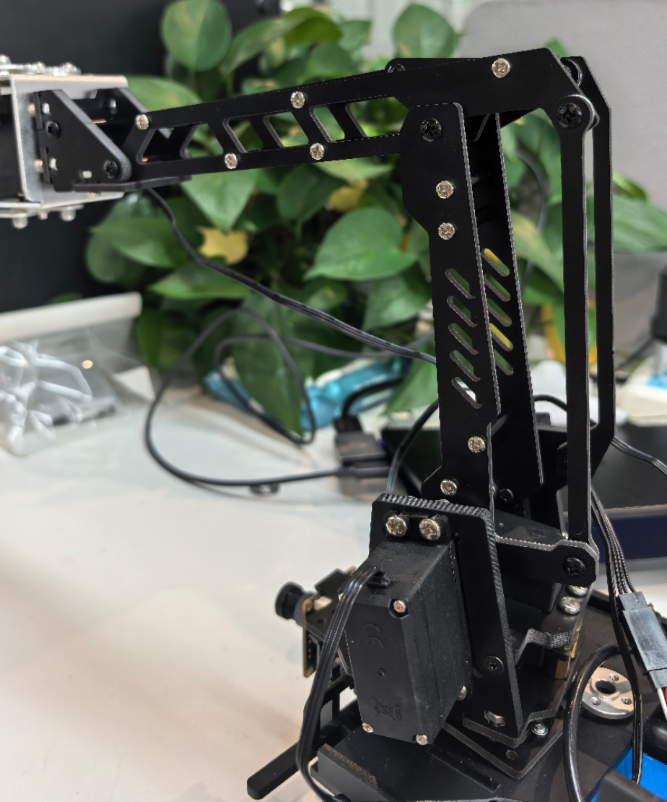
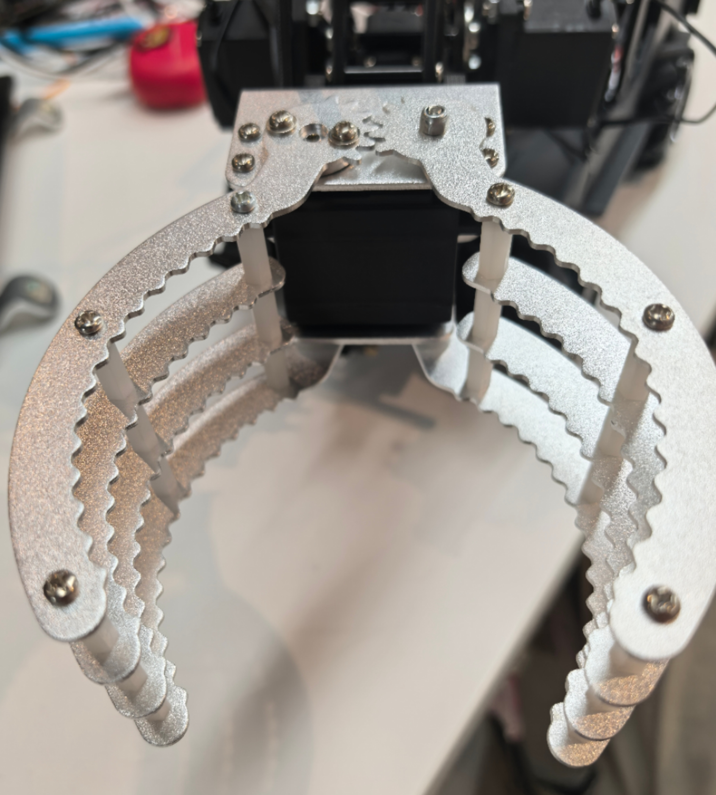

Introduction
本指导书仍在撰写和调整中
第一章 项目概述与环境搭建
1.1 项目目标与应用场景
项目目标
应用场景
1.2 硬件组成清单
核心硬件
连接说明
1.3 软件环境配置指南
基础环境
创建虚拟环境
安装核心依赖
硬件驱动安装
1.4 项目目录结构解析
项目目录结构
系统架构与原理
说明各模块功能
数据流说明
1.5 机器人系统架构
系统整体架构图
系统模块划分与章节对应
系统工作流程
1.1 项目目标与应用场景
项目目标
本项目旨在开发一个能够自动识别并收集网球的智能机器人系统。系统通过摄像头实时捕捉环境图像，利用计算机视觉技术识别网球位置，然后控制机器人移动并配合机械臂完成网球收集任务。项目融合了图像处理、运动控制和嵌入式系统开发等多个技术领域。

应用场景
- 网球训练场：自动收集散落在球场各处的网球
- 体育器材管理：减少人工收集成本
- 教育演示：机器人视觉系统的教学案例
- 智能家居：物品自动收集的参考实现
1.2 硬件组成清单
核心硬件
实际项目可能因具体版本有所调整，根据需求选择
| 部件 | 规格 | 功能说明 |
|---|---|---|
| 主控板 | 飞腾派开发板 | 国产高性能嵌入式平台 |
| STM32控制器 | STM32F4系列开发板 | 实时运动控制 |
| 摄像头 | OV5647模块 | 500万像素，支持720P |
| 电机驱动 | L298N双H桥驱动模块 | 直流电机控制 |
| 直流减速电机 | 12V/300RPM带编码器 | 四轮驱动 |
| 机械臂 | 4自由度串口舵机臂 | 支持角度控制 |
连接说明
- 飞腾派通过USB串口连接STM32
- STM32通过GPIO控制L298N
- 摄像头直接连接到飞腾派CSI接口
1.3 软件环境配置指南
基础环境
sudo apt update
sudo apt install python3.11 python3.11-venv
创建虚拟环境
为什么需要虚拟环境？：依赖隔离，版本控制，权限管理等
pyproject.toml`中指定`requires-python = ">=3.8"
python3.11 -m venv venv
source venv/bin/activate
安装核心依赖
pip install opencv-python==4.8.0.76 #motor/pyproject.toml要求>=4.1.1
pip install numpy==1.24.3
pip install dora-rs==0.3.10
pip install pyarrow==12.0.1
pip install flask==2.3.2
pip install python-socketio==5.8.0
硬件驱动安装
# 安装I2C工具
sudo apt install i2c-tools
# 检测连接的I2C设备
sudo i2cdetect -y 1
# 安装串口工具
sudo apt install minicom
1.4 项目目录结构解析
项目目录结构
Phytium-Car-STM32-Arm-onPi/
│
├── car.service # 系统服务配置文件（用于设置机器人作为系统服务启动）
├── car.sh # 启动脚本（用于启动机器人程序）
├── car_cv.py # 机器人视觉控制主逻辑（处理视觉数据并生成控制指令）
├── car_cv.yaml # Dora框架配置文件（定义节点和输入输出关系）
├── car_stop.py # 停止机器人脚本（用于停止电机）
├── color_detect.py # 颜色检测启动文件（主入口）
├── control.py # 控制模块（提供Web控制界面和Socket.IO通信）
├── index.html # Web控制界面HTML文件
├── move.py # 运动控制模块（封装运动指令发送）
├── README.md # 项目说明文件
│
├── common/ # 公共模块（数据结构和工具类）
│ ├── calculate.py # 计算类（处理目标检测结果的数据结构）
│ ├── move_data.py # 运动数据结构（用于节点间通信）
│ ├── test_move_data.py # 运动数据结构测试
│ ├── view.py # 视图数据类（用于Web显示）
│ └── __init__.py # 包初始化文件
│
├── frame/ # 存储摄像头捕获的原始帧图像
│
├── mask/ # 存储掩膜图像
│
├── motor/ # 电机控制模块
│ ├── main.py # 电机控制主程序（接收运动指令并控制电机）
│ ├── Motor.py # 电机控制基类和实现（PCA9685和Modbus）
│ ├── pyproject.toml # 电机控制模块项目配置
│ └── test.py # 电机控制测试脚本
│
├── mycv/ # 计算机视觉模块
│ ├── color.py # 颜色检测器类（识别网球）
│ ├── README.md # 模块说明
│ └── __init__.py # 包初始化文件
│
├── process/ # 存储处理后的图像
│
├── templates/ # Web模板目录
│ └── index.html # Web控制界面HTML模板
│
└── untils/ # 工具模块
├── untils.py # 工具函数（图像处理、方向转换等）
└── __init__.py # 包初始化文件
系统架构与原理
graph TD
A[高清摄像头] --> B[图像采集模块]
B --> C[图像预处理模块]
C --> D[网球识别模块]
D --> E[位置计算模块]
E --> F[运动决策模块]
F --> G[电机控制模块]
G --> H[底盘运动执行]
F --> I[机械臂控制模块]
I --> J[机械臂执行]
J --> K[网球收集]
K --> L[状态反馈模块]
L --> B
L --> M[Web控制界面]
说明各模块功能：
- 图像采集模块：
- 使用OpenCV捕获视频流
- 支持多种图像编码格式（BGR8, RGB8, JPEG, PNG）
- 文件：
color_detect.py,untils/untils.py
- 图像预处理模块：
- 高斯模糊降噪
- 中值滤波
- HSV颜色空间转换
- 形态学操作（开闭运算）
- 文件：
mycv/color.py
- 网球识别模块：
- HSV颜色阈值分割
- 轮廓检测与分析
- 圆形度计算（过滤非网球物体）
- 文件：
mycv/color.py
- 位置计算模块：
- 计算网球中心坐标
- 计算网球在图像中的比例
- 计算与图像中心的偏移量
- 文件：
car_cv.py,common/calculate.py
- 运动决策模块：
- PID控制器实现平滑运动
- 目标丢失处理策略
- 速度平滑处理
- 文件：
car_cv.py
- 电机控制模块：
- 支持PCA9685和Modbus两种驱动方式
- 运动指令封装
- 文件：
motor/Motor.py,move.py
- 底盘运动执行：
- 四轮底盘控制
- 前进/后退/转向执行
- 文件：
motor/main.py
- 机械臂控制模块：
- 串口通信控制
- 抓取动作序列控制
- 文件：
color_detect.py(机械臂控制部分)
- 机械臂执行：
- 网球抓取动作
- 网球放置动作
- 文件：
color_detect.py
- 网球收集：
- 完成网球收集任务
- 重置系统状态
- 状态反馈模块：
- 实时视频流传输
- 运动数据显示
- 系统状态反馈
- 文件：
control.py,templates/index.html
- Web控制界面：
- 摇杆控制
- 视频显示
- 状态监控
- 控制开关
- 文件：
templates/index.html
数据流说明：
视觉处理流： 摄像头 → 图像采集 → 预处理 → 网球识别 → 位置计算 → 运动决策
控制执行流： 运动决策 → 电机控制 → 底盘运动 运动决策 → 机械臂控制 → 机械臂执行 → 网球收集
反馈流： 状态反馈 → Web控制界面（用户） 状态反馈 → 图像采集（系统循环）
1.5 机器人系统架构
系统整体架构图
graph TD
A[视觉感知系统] --> B[主控决策系统]
B --> C[运动控制系统]
B --> D[机械臂控制系统]
C --> E[底盘执行机构]
D --> F[抓取执行机构]
G[用户交互系统] --> B
H[环境感知系统] --> B
B --> I[状态反馈系统]
I --> G
系统模块划分与章节对应
1. 视觉感知系统（第二章）
- 功能：采集环境图像，识别网球位置
2. 主控决策系统（第六章）
- 功能：协调各子系统，制定行为策略
3. 运动控制系统（第四章）
- 功能：控制机器人底盘运动
4. 机械臂控制系统（第五章）
- 功能：控制机械臂完成抓取动作
5. 底盘执行机构（第四章）
- 功能：驱动机器人移动
6. 抓取执行机构（第五章）
- 功能：执行网球抓取动作
7. 用户交互系统（第七章）
- 功能：提供人机交互界面
8. 环境感知系统（第三章）
- 功能：感知周围环境状态
9. 状态反馈系统（第七章）
- 功能：监控系统状态并提供反馈
系统工作流程
sequenceDiagram
participant 用户
participant 交互系统
participant 主控系统
participant 视觉系统
participant 运动控制
participant 机械臂控制
participant 底盘
participant 机械臂
用户->>交互系统: 启动任务
交互系统->>主控系统: 发送启动指令
主控系统->>视觉系统: 开始图像采集
视觉系统->>主控系统: 检测到网球位置
主控系统->>运动控制: 计算导航路径
运动控制->>底盘: 发送运动指令
底盘-->>运动控制: 位置反馈
运动控制-->>主控系统: 到达目标位置
主控系统->>机械臂控制: 准备抓取
机械臂控制->>机械臂: 执行抓取动作
机械臂-->>机械臂控制: 抓取完成
机械臂控制-->>主控系统: 任务完成
主控系统->>交互系统: 更新状态
交互系统->>用户: 显示任务完成
学习路径建议
- 基础理论（第二章）
- 先理解数字图像处理基础
- 掌握HSV颜色空间原理
- 学习目标识别算法
- 核心功能（第三、四、五章）
- 网球检测系统实现
- 机器人运动控制原理
- 机械臂控制技术
- 系统框架（第六章）
- Dora-RS中间件架构
- 数据流管理
- 节点通信机制
- 集成应用（第七章）
- 多模块协同工作
- 系统服务化部署
- 性能优化技巧
- 实践创新
- 尝试改进网球识别算法
- 优化运动控制参数
- 扩展机械臂功能
第二章 视觉处理基础理论
2.1 数字图像处理基础
什么是数字图像？
像素表示
项目中的图像获取与处理
2.2 色彩空间与HSV原理
RGB的局限性
HSV色彩空间
项目中的HSV处理
2.3 图像预处理技术详解
高斯模糊降噪
中值滤波
形态学操作
2.4 目标识别核心算法
轮廓检测
轮廓分析
位置计算
2.1 数字图像处理基础
什么是数字图像？
数字图像是由像素组成的二维矩阵，每个像素包含颜色信息。在我们的项目中，摄像头捕获的图像是640×480分辨率，即由307,200个像素点组成。
像素表示
- RGB格式：每个像素由红(Red)、绿(Green)、蓝(Blue)三个分量组成，每个分量取值范围0-255
- BGR格式：OpenCV默认使用BGR顺序而非RGB
- 灰度图：单通道图像，每个像素只有一个亮度值(0-255)
项目中的图像获取与处理
在项目中，我们通过摄像头实时捕获图像帧进行处理：
# 在color_detect.py中
def test():
# 创建颜色检测器实例
# 参数: lower_hsv - HSV下限阈值, upper_hsv - HSV上限阈值, min_area - 最小识别区域面积
dector = ColorDetector([30, 70, 80], [50, 255, 255], min_area=300)
# 打开默认摄像头（USB摄像头）
cap = cv2.VideoCapture(0)
if not cap.isOpened():
print("无法打开摄像头")
exit()
while True:
# 读取一帧图像
ret, frame = cap.read()
if not ret:
print("无法获取帧")
break
# 垂直翻转图像（根据摄像头安装方向）
image = cv2.flip(frame, 0)
# 处理当前帧
processed_frame, mask, data = dector.process(image)
# 显示原始图像和处理结果
cv2.imshow("Camera Feed", image)
cv2.imshow("Processed Frame", processed_frame)
cv2.imshow("Mask", mask)
# 检测按键输入
if cv2.waitKey(1) & 0xFF == ord('q'):
break
# 释放摄像头资源
cap.release()
cv2.destroyAllWindows()
2.2 色彩空间与HSV原理
RGB的局限性
RGB色彩空间对光照变化敏感，在网球识别中表现不佳。因此我们使用HSV色彩空间。
HSV色彩空间
- Hue(色调)：颜色类型，0-180°（在OpenCV中）
- Saturation(饱和度)：颜色纯度，0-255
- Value(明度)：颜色亮度，0-255
HSV空间更接近人类对颜色的感知，对光照变化不敏感。
项目中的HSV处理
在mycv/color.py中实现：
class ColorDetector:
def __init__(self, lower_hsv, upper_hsv, min_area=300, max_area=10000):
# 初始化HSV阈值范围
self.lower = np.array(lower_hsv)
self.upper = np.array(upper_hsv)
self.min_area = min_area
self.max_area = max_area
# 创建形态学操作核
self.kernel = cv2.getStructuringElement(cv2.MORPH_RECT, (5, 5))
def process(self, frame):
# 高斯模糊减少噪声
blurred_img = cv2.GaussianBlur(frame, (5, 5), 0)
# 中值滤波进一步减少噪声
median_blur = cv2.medianBlur(blurred_img, 5)
# 转换为HSV颜色空间
hsv = cv2.cvtColor(median_blur, cv2.COLOR_BGR2HSV)
# 创建颜色掩膜
mask = cv2.inRange(hsv, self.lower, self.upper)
# 形态学操作（消除噪声）
mask = cv2.morphologyEx(mask, cv2.MORPH_OPEN, self.kernel, iterations=1)
ma = mask # 保存中间结果
# 形态学操作（填充孔洞）
mask = cv2.morphologyEx(mask, cv2.MORPH_CLOSE, self.kernel, iterations=3)
mask = cv2.morphologyEx(mask, cv2.MORPH_OPEN, self.kernel, iterations=2)
mask = cv2.GaussianBlur(mask, (5, 5), 0)
# 查找轮廓
contours, _ = cv2.findContours(mask, cv2.RETR_EXTERNAL, cv2.CHAIN_APPROX_SIMPLE)
data = []
processed_frame = frame.copy()
# 处理每个检测到的轮廓
for cnt in contours:
area = cv2.contourArea(cnt)
perimeter = cv2.arcLength(cnt, True)
# 避免除零错误
if perimeter == 0:
continue
circularity = 4 * np.pi * area / (perimeter * perimeter)
# 过滤条件：面积和圆形度
if area > self.min_area and area < self.max_area and circularity > 0.8:
x, y, w, h = cv2.boundingRect(cnt)
center_x = x + w // 2
center_y = y + h // 2
# 计算网球在图像中的比例
ratio = (h / frame.shape[0]) * (w / frame.shape[1])
# 在图像上标记网球
cv2.rectangle(processed_frame, (x, y), (x + w, y + h), (0, 255, 0), 2)
cv2.circle(processed_frame, (center_x, center_y), 5, (0, 0, 255), -1)
cv2.putText(processed_frame, f"Ball:({center_x}, {center_y})",
(center_x - 60, center_y - 20), cv2.FONT_HERSHEY_SIMPLEX,
0.5, (255, 255, 255), 2)
# 添加网球数据
data.append([x, y, w, h]) # 项目中存储边界框而非Calculate对象
return processed_frame, ma, data # 返回原始掩膜和处理后图像
| 处理前 |  |
|---|---|
| HSV下限: [20, 100, 100] HSV上限: [30, 255, 255] |  |
| HSV下限: [20, 100, 70] HSV上限: [30, 255, 285] | |
| HSV下限: [30,70,80] HSV上限: [50,255,255] |  |
2.3 图像预处理技术详解
处理过程
在color_detect.py中，ColorDetector类的process方法包含以下步骤：
1. 高斯模糊降噪：使用cv2.GaussianBlur(frame, (5, 5), 0)
2. 中值滤波：使用cv2.medianBlur(blurred_img, 5)
3. 转换到HSV颜色空间
4. 创建颜色掩膜：cv2.inRange
5. 形态学操作（开运算、闭运算等）：
开运算：cv2.morphologyEx(mask, cv2.MORPH_OPEN, kernel, iterations=1)
闭运算：cv2.morphologyEx(mask, cv2.MORPH_CLOSE, kernel, iterations=3)
再次开运算：cv2.morphologyEx(mask, cv2.MORPH_OPEN, kernel, iterations=2)
高斯模糊：cv2.GaussianBlur(mask, (5, 5), 0)
在掩膜处理之后，又使用了一次高斯模糊（在掩膜图像上），这也可以看作是一种降噪或平滑处理。
高斯模糊降噪
在项目中，我们使用高斯模糊减少图像噪声：
blurred_img = cv2.GaussianBlur(frame, (5, 5), 0)
- 函数:
cv2.GaussianBlur(src, ksize, sigmaX) - 参数:
src: 输入图像ksize: 高斯核大小 (宽度, 高度)，必须是正奇数sigmaX: X方向标准差，0表示自动计算
- 返回值: 模糊后的图像
- 作用: 减少图像噪声，平滑细节
| 处理前 | 处理后 |
|---|---|
 |  |
中值滤波
项目中进一步使用中值滤波去除噪声：
median_blur = cv2.medianBlur(blurred_img, 5)
- 函数:
cv2.medianBlur(src, ksize) - 参数:
src: 输入图像ksize: 滤波孔径大小，必须是大于1的奇数
- 返回值: 滤波后的图像
- 作用: 有效去除椒盐噪声
| 处理前 | 处理后 |
|---|---|
 |  |
形态学操作
项目中应用形态学操作优化掩膜：
# 开运算去除小噪点
mask = cv2.morphologyEx(mask, cv2.MORPH_OPEN, self.kernel, iterations=1)
# 闭运算填充孔洞
mask = cv2.morphologyEx(mask, cv2.MORPH_CLOSE, self.kernel, iterations=3)
# 二次开运算平滑边缘
mask = cv2.morphologyEx(mask, cv2.MORPH_OPEN, self.kernel, iterations=2)
- 操作序列：开-闭-开组合优化掩膜质量
- 迭代次数：闭运算3次确保填充网球内部空洞
| 处理前 | 处理后 |
|---|---|
 |  |
2.4 目标识别核心算法
轮廓检测
项目中通过轮廓检测识别网球：
contours, _ = cv2.findContours(mask, cv2.RETR_EXTERNAL, cv2.CHAIN_APPROX_SIMPLE)
- 函数:
cv2.findContours(image, mode, method) - 参数:
image: 输入二值图像mode: 轮廓检索模式（cv2.RETR_EXTERNAL只检测最外层轮廓）method: 轮廓近似方法（cv2.CHAIN_APPROX_SIMPLE压缩轮廓点）
- 返回值:
contours: 检测到的轮廓列表hierarchy: 轮廓层次信息
轮廓分析
分析轮廓特征以识别网球：
# 计算关键特征
area = cv2.contourArea(cnt)
perimeter = cv2.arcLength(cnt, True)
circularity = 4 * np.pi * area / (perimeter * perimeter) if perimeter > 0 else 0
x, y, w, h = cv2.boundingRect(cnt)
# 过滤非网球区域
if area > self.min_area and area < self.max_area and circularity > 0.8:
# 识别为网球
- 面积范围：300-10000像素过滤小噪点和大面积区域
- 圆形度阈值：>0.8确保接近圆形
位置计算
计算网球位置和比例：
center_x = x + w // 2
center_y = y + h // 2
ratio = (h / frame.shape[0]) * (w / frame.shape[1])
- 逻辑:
- 中心坐标 = 边界矩形左上角坐标 + 宽度/高度的一半
- 比例 = (高度/图像高度) × (宽度/图像宽度)
- 应用:
- 中心坐标用于定位网球位置
- 比例用于估计网球距离和大小
关键函数总结表
| 函数 | 参数 | 返回值 | 功能描述 | 项目应用位置 |
|---|---|---|---|---|
cv2.VideoCapture() | index | VideoCapture对象 | 打开摄像头 | color_detect.py |
cap.read() | 无 | (ret, frame) | 读取一帧图像 | color_detect.py |
cv2.cvtColor() | src, code | 转换后图像 | 颜色空间转换 | mycv/color.py |
cv2.inRange() | src, lowerb, upperb | 二值掩膜 | 创建颜色掩膜 | mycv/color.py |
cv2.GaussianBlur() | src, ksize, sigmaX | 模糊后图像 | 高斯模糊降噪 | mycv/color.py |
cv2.findContours() | image, mode, method | (contours, hierarchy) | 检测图像轮廓 | mycv/color.py |
cv2.contourArea() | contour | 面积值 | 计算轮廓面积 | mycv/color.py |
cv2.boundingRect() | points | (x,y,w,h) | 获取轮廓边界矩形 | mycv/color.py |
cv2.morphologyEx() | src, op, kernel | 处理后的图像 | 形态学操作 | mycv/color.py |
cv2.imshow() | winname, mat | 无 | 显示图像 | color_detect.py |
第三章 网球检测系统实现
3.1 颜色阈值分割实战
HSV阈值分割原理
参数调整技巧
光照变化
3.2 形态学处理技术应用
轮廓检测实现
关键特征提取
网球识别条件
3.3 轮廓分析与特征提取
中心点计算与偏移量
低通滤波平实现
目标丢失处理
距离估计
机坐标转换到机器人坐标系
3.4 位置计算与坐标转换
多级过滤策略
实时性能优化
错误处理与鲁棒性
3.1 颜色阈值分割实战
HSV阈值分割原理
在项目中，颜色阈值分割是网球识别的核心步骤，通过定义HSV空间中的上下限阈值来提取网球区域：
# mycv/color.py 中的ColorDetector类
class ColorDetector:
def __init__(self, lower_hsv, upper_hsv, min_area=300, max_area=10000):
"""
初始化颜色检测器
参数:
lower_hsv: HSV下限阈值 [H_min, S_min, V_min]
upper_hsv: HSV上限阈值 [H_max, S_max, V_max]
min_area: 最小识别区域面积
max_area: 最大识别区域面积
"""
# 将阈值转换为NumPy数组
self.lower = np.array(lower_hsv)
self.upper = np.array(upper_hsv)
self.min_area = min_area
self.max_area = max_area
self.h = 480 # 图像高度
self.w = 640 # 图像宽度
def process(self, frame):
# 预处理 - 高斯模糊减少噪声
blurred_img = cv2.GaussianBlur(frame, (5, 5), 0)
# 中值滤波进一步减少噪声
median_blur = cv2.medianBlur(blurred_img, 5)
# 转换为HSV颜色空间
hsv = cv2.cvtColor(median_blur, cv2.COLOR_BGR2HSV)
# 创建颜色掩膜
mask = cv2.inRange(hsv, self.lower, self.upper)
# 形态学操作（消除噪声）
kernel = cv2.getStructuringElement(cv2.MORPH_RECT, (5, 5))
mask = cv2.morphologyEx(mask, cv2.MORPH_OPEN, kernel, iterations=1)
mask = cv2.morphologyEx(mask, cv2.MORPH_CLOSE, kernel, iterations=3)
mask = cv2.morphologyEx(mask, cv2.MORPH_OPEN, kernel, iterations=2)
mask = cv2.GaussianBlur(mask, (5, 5), 0)
# 查找轮廓
contours, _ = cv2.findContours(mask, cv2.RETR_EXTERNAL, cv2.CHAIN_APPROX_SIMPLE)
data = []
processed_frame = frame.copy()
# 处理每个轮廓
for cnt in contours:
x, y, w, h = cv2.boundingRect(cnt)
area = cv2.contourArea(cnt)
perimeter = cv2.arcLength(cnt, True)
if perimeter == 0:
continue
circularity = 4 * np.pi * area / (perimeter * perimeter)
# 网球识别条件
if (area > self.min_area and
area < self.max_area and
circularity > 0.8):
center_x = x + w // 2
center_y = y + h // 2
ratio = (h / self.h) * (w / self.w)
# 绘制识别结果
cv2.rectangle(processed_frame, (x, y), (x + w, y + h), (0, 255, 0), 2)
cv2.circle(processed_frame, (center_x, center_y), 5, (0, 0, 255), -1)
data.append([center_x, center_y, ratio])
return processed_frame, mask, data
参数调整技巧
我们使用以下HSV阈值范围识别网球：
# color_detect.py中的测试代码
dector = ColorDetector([30, 70, 80], [50, 255, 255], min_area=300)
- 色调(H)：30-50对应黄绿色范围（网球典型颜色）
- 饱和度(S)：70以上确保颜色足够鲜艳（过滤灰暗背景）
- 明度(V)：80以上避免过暗区域（排除阴影）
光照变化
通过以下方式应对光照变化：
# mycv/color.py中的预处理流程
blurred_img = cv2.GaussianBlur(frame, (5, 5), 0) # 高斯模糊
median_blur = cv2.medianBlur(blurred_img, 5) # 中值滤波
hsv = cv2.cvtColor(median_blur, cv2.COLOR_BGR2HSV) # 转HSV空间
3.2 轮廓分析与特征提取
轮廓检测实现
项目中通过轮廓检测识别网球区域：
# mycv/color.py中的process方法
contours, _ = cv2.findContours(mask, cv2.RETR_EXTERNAL, cv2.CHAIN_APPROX_SIMPLE)
# 函数详解:
# cv2.findContours(image, mode, method) - 查找图像中的轮廓
# 参数:
# image: 输入二值图像
# mode: 轮廓检索模式（cv2.RETR_EXTERNAL只检测最外层轮廓）
# method: 轮廓近似方法（cv2.CHAIN_APPROX_SIMPLE压缩轮廓点）
# 返回值:
# contours: 检测到的轮廓列表
# hierarchy: 轮廓层次信息（本项目未使用）
关键特征提取
项目中分析轮廓特征以识别网球：
# mycv/color.py中的process方法
for cnt in contours:
# 计算轮廓面积
# cv2.contourArea(contour) - 计算轮廓面积
# 参数: contour - 轮廓点集
# 返回值: 轮廓面积（像素数）
area = cv2.contourArea(cnt)
# 计算轮廓周长
# cv2.arcLength(curve, closed) - 计算轮廓周长
# 参数:
# curve: 轮廓点集
# closed: 轮廓是否闭合
# 返回值: 轮廓周长
perimeter = cv2.arcLength(cnt, True)
# 计算圆形度（圆度）
# 公式: circularity = 4π * area / perimeter²
# 完美圆形值为1，值越小越不规则
if perimeter > 0: # 避免除以零
circularity = 4 * np.pi * area / (perimeter * perimeter)
else:
circularity = 0
# 获取边界矩形
# cv2.boundingRect(points) - 计算轮廓的边界矩形
# 参数: points - 轮廓点集
# 返回值: (x, y, w, h) - 矩形左上角坐标和宽高
x, y, w, h = cv2.boundingRect(cnt)
# 计算长宽比
aspect_ratio = w / float(h)
网球识别条件
项目中设置过滤条件识别网球：
# mycv/color.py中的process方法
# 过滤条件：面积、圆形度和长宽比
if (area > self.min_area and
area < self.max_area and
circularity > 0.8 and
0.8 < aspect_ratio < 1.2):
# 识别为网球
center_x = x + w // 2
center_y = y + h // 2
ratio = (h / frame.shape[0]) * (w / frame.shape[1])
# 添加到检测结果
data.append(Calculate(center_x, center_y, ratio))
3.3 位置计算与状态处理
中心点计算与偏移量
# car_cv.py中的CarCV类
class CarCV:
def __init__(self):
# ...
self.center_x = 278 # 图像中心X
self.center_y = 298 # 图像中心Y
self.width = 640 # 图像宽度
self.height = 480 # 图像高度
self.alpha = 0.2 # 低通滤波系数
self.last_x_offset = 0
self.last_y_offset = 0
def handle_target_found(self, x, y, ratio, current_time):
# 计算原始偏移
raw_x_offset = x - self.center_x
raw_y_offset = y - self.center_y
# 应用低通滤波平滑位置变化
x_offset = self.low_pass_filter(raw_x_offset, self.last_x_offset)
y_offset = self.low_pass_filter(raw_y_offset, self.last_y_offset)
# 更新上一次的偏移值
self.last_x_offset = x_offset
self.last_y_offset = y_offset
return x_offset, y_offset
低通滤波实现
低通滤波平滑位置变化：
def low_pass_filter(self, new_value, last_value):
"""低通滤波器"""
return self.alpha * new_value + (1 - self.alpha) * last_value
目标丢失处理
目标丢失处理逻辑：
def handle_target_lost(self, current_time):
self.lost_count += 1
self.target_found = False
if self.lost_count >= self.max_lost_frames:
# 进入搜索模式
self.search_start_time = current_time
# 根据最后有效位置确定搜索方向
if self.last_valid_position and self.last_valid_position[0] > self.width / 2:
self.search_direction = 1 # 向右搜索
else:
self.search_direction = -1 # 向左搜索
print("进入搜索模式，方向：", "右" if self.search_direction > 0 else "左")
return True # 需要搜索
return False # 不需要搜索
距离估计
根据网球比例估计距离：
# 在car_cv.py中添加距离估计
def estimate_distance(size_ratio, reference_size=0.05):
"""
估计网球到摄像头的距离
参数:
size_ratio: 网球在图像中的比例
reference_size: 网球大小参考值
返回值: 估计距离（米）
"""
# 经验公式：距离 ∝ 1 / √(图像比例)
if size_ratio > 0:
# 参考距离计算：当网球在图像中比例为reference_size时，距离为1米
distance = 1.0 / math.sqrt(size_ratio / reference_size)
return distance
return 0
坐标转换到机器人坐标系
实现图像坐标到机器人坐标的转换：
# 在car_cv.py中添加坐标转换
def image_to_car_coordinates(image_x, image_y, distance, image_width, image_height, fov=60):
"""
将图像坐标转换为机器人坐标系
参数:
image_x: 图像x坐标
image_y: 图像y坐标
distance: 估计距离（米）
image_width: 图像宽度
image_height: 图像高度
fov: 摄像头视野角度（度）
返回值: (car_x, car_y) - 机器人坐标系中的位置
"""
# 计算焦距（像素）
focal_length = image_width / (2 * math.tan(math.radians(fov / 2)))
# 计算中心偏移（米）
center_x = image_width / 2
center_y = image_height / 2
# 转换为机器人坐标系
car_x = (image_x - center_x) * distance / focal_length
car_y = (image_y - center_y) * distance / focal_length
return car_x, car_y
3.4 视觉处理流程优化
多级过滤策略
项目中采用的多级过滤策略：
- 面积过滤：300 < area < 10000 像素
- 圆形度过滤：circularity > 0.8
- 位置稳定性过滤：低通滤波平滑位置变化
- 比例一致性检查：连续多帧检测结果一致
实时性能优化
项目中使用的性能优化技术：
# 减少图像处理分辨率
frame = cv2.resize(frame, (320, 240)) # 降低分辨率提高处理速度
# 限制处理区域
roi = frame[100:400, 100:500] # 只处理感兴趣区域
# 使用轻量级处理操作
# 如使用简单阈值代替复杂分割算法
错误处理与鲁棒性
项目中增强鲁棒性的措施：
try:
# 图像处理代码
processed_frame, mask, data = dector.process(image)
except Exception as e:
print(f"图像处理错误: {e}")
# 使用上一帧结果或默认值
data = self.last_valid_data
# 检查数据有效性
if not data or len(data) == 0:
# 处理目标丢失情况
self.handle_target_lost(current_time)
关键函数应用总结
| 功能 | 函数 | 参数说明 | 返回值 | 项目位置 |
|---|---|---|---|---|
| HSV阈值分割 | cv2.inRange() | src: HSV图像, lowerb: 下界, upperb: 上界 | 二值掩膜 | mycv/color.py |
| 形态学开运算 | cv2.morphologyEx() | src: 输入图像, op: 操作类型, kernel: 结构元素 | 处理后的图像 | mycv/color.py |
| 轮廓检测 | cv2.findContours() | image: 二值图像, mode: 检索模式, method: 近似方法 | 轮廓列表 | mycv/color.py |
| 轮廓面积 | cv2.contourArea() | contour: 轮廓点集 | 面积值 | mycv/color.py |
| 边界矩形 | cv2.boundingRect() | points: 轮廓点集 | (x,y,w,h) | mycv/color.py |
| 坐标转换 | image_to_car_coordinates() | image_x/y: 图像坐标, distance: 距离 | 机器人坐标 | car_cv.py |
| 距离估计 | estimate_distance() | size_ratio: 网球比例 | 估计距离 | car_cv.py |
第四章 机器人运动控制
4.1 底盘控制原理
差速转向模型实现
差速转向原理
位姿估计实现
4.2 驱动电路设计
PCA9685控制器
保护机制实现
4.3 运动控制算法
PID控制器实现
4.4 底盘控制系统集成
状态机实现
运动控制接口
性能优化技巧
4.1 底盘控制原理
差速转向模型实现
差速转向是轮式移动机器人最基础也是最常用的运动控制方式。在本项目中，我们采用四轮底盘结构，其中两个主动轮分别位于左右两侧。这种设计的核心原理在于通过控制左右轮的速度差来实现转向：当左右轮以相同速度转动时，机器人直线前进；当左右轮速度不同时，机器人会向速度较慢的一侧转向。

在项目中，差速转向模型通过控制左右轮速比实现：
# motor/Motor.py - PCA9685Motor类
class PCA9685Motor:
def __init__(self, d1, d2, d3, d4):
"""初始化PCA9685电机控制器"""
self.interval = 0.05
self.last_time = time.time()
self.PCA9685_ADDRESS = 0x60 # I2C地址
self.bus = smbus.SMBus(2) # 使用I2C总线2
def Control(self, data: MoveData):
"""控制机器人运动"""
# 将速度转换为PWM占空比 (0-4095)
speed_pwm = int(data.speed * 4095 / 100)
# 设置所有电机相同的基础速度
self.set_pwm(speed_pwm, speed_pwm, speed_pwm, speed_pwm)
# 根据方向执行不同动作
actions = {
0: self.Stop, # 停止
1: self.Advance, # 前进
2: self.Back, # 后退
5: self.Turn_Left, # 左转
6: self.Turn_Right # 右转
}
# 执行对应动作
if data.direction in actions:
actions[data.direction]()
差速转向原理详解
差速转向模型的核心是控制左右轮的速度差：
- 直线前进：左右轮速度相同
- 左转：右轮速度 > 左轮速度
- 右转：左轮速度 > 右轮速度
- 原地旋转：左右轮速度相等但方向相反
通过PCA9685控制器实现这一模型：
# motor/Motor.py中的转向控制实现
class PCA9685Motor:
def Advance(self):
"""前进：所有电机正转"""
self.Status_control(1, 1, 1, 1)
def Back(self):
"""后退：所有电机反转"""
self.Status_control(-1, -1, -1, -1)
def Turn_Left(self):
"""左转：右轮前进，左轮后退"""
self.Status_control(1, -1, 1, -1)
def Turn_Right(self):
"""右转：左轮前进，右轮后退"""
self.Status_control(-1, 1, -1, 1)
def Status_control(self, m1, m2, m3, m4):
"""
控制四个电机的状态
参数:
m1-m4: 每个电机的方向（1:正转, -1:反转, 0:停止）
"""
# 设置每个电机的PWM信号
self.set_motor_pwm((1, 2), m1) # 电机1
self.set_motor_pwm((3, 4), m2) # 电机2
self.set_motor_pwm((7, 8), m3) # 电机3
self.set_motor_pwm((9, 10), m4) # 电机4
def set_motor_pwm(self, channel_pair, direction):
"""
设置单个电机的PWM信号
参数:
channel_pair: 电机对应的两个通道
direction: 电机方向（1, -1, 0）
"""
ch1, ch2 = channel_pair
if direction == 1: # 正转
self.set_channel_pwm(ch1, 0) # 通道1低电平
self.set_channel_pwm(ch2, 4095) # 通道2高电平
elif direction == -1: # 反转
self.set_channel_pwm(ch1, 4095) # 通道1高电平
self.set_channel_pwm(ch2, 0) # 通道2低电平
else: # 停止
self.set_channel_pwm(ch1, 0)
self.set_channel_pwm(ch2, 0)
位姿估计实现
使用编码器数据进行位姿估计：
# motor/main.py - 位姿估计实现
import math
class Odometry:
def __init__(self, wheel_radius, wheel_base):
"""初始化里程计"""
self.wheel_radius = wheel_radius # 轮子半径（米）
self.wheel_base = wheel_base # 轮距（米）
self.x = 0.0 # X坐标
self.y = 0.0 # Y坐标
self.theta = 0.0 # 朝向角度（弧度）
def update(self, left_distance, right_distance):
"""更新位姿估计"""
# 计算线位移和角位移
delta_distance = (left_distance + right_distance) / 2
delta_theta = (right_distance - left_distance) / self.wheel_base
# 更新位姿
self.x += delta_distance * math.cos(self.theta + delta_theta / 2)
self.y += delta_distance * math.sin(self.theta + delta_theta / 2)
self.theta += delta_theta
# 归一化角度到[-π, π]范围
self.theta = (self.theta + math.pi) % (2 * math.pi) - math.pi
return self.x, self.y, self.theta
4.2 驱动电路设计
PCA9685控制器详解
PCA9685用于控制电机驱动：
# motor/Motor.py - PCA9685控制实现
class PCA9685Motor:
def set_pwm_frequency(self, freq):
"""设置PWM频率"""
# 计算预分频值
prescale_val = int(25000000.0 / (4096 * freq) * 0.98 - 1 + 0.5)
# 进入睡眠模式
old_mode = self.bus.read_byte_data(self.PCA9685_ADDRESS, self.MODE1)
new_mode = (old_mode & 0x7F) | 0x10 # 设置SLEEP位
self.bus.write_byte_data(self.PCA9685_ADDRESS, self.MODE1, new_mode)
# 设置预分频值
self.bus.write_byte_data(self.PCA9685_ADDRESS, self.PRE_SCALE, prescale_val)
# 退出睡眠模式
self.bus.write_byte_data(self.PCA9685_ADDRESS, self.MODE1, old_mode)
time.sleep(0.001)
# 重启设备
self.bus.write_byte_data(self.PCA9685_ADDRESS, self.MODE1, old_mode | 0x80)
def set_pwm(self, ch1, ch2, ch3, ch4):
"""设置四个通道的PWM值"""
# 限制占空比在0-4095范围内
ch1 = max(0, min(4095, ch1))
ch2 = max(0, min(4095, ch2))
ch3 = max(0, min(4095, ch3))
ch4 = max(0, min(4095, ch4))
# 设置通道PWM值
self.set_channel_pwm(0, ch1)
self.set_channel_pwm(5, ch2)
self.set_channel_pwm(6, ch3)
self.set_channel_pwm(11, ch4)
def set_channel_pwm(self, channel, duty):
"""设置单个通道的PWM值"""
reg_base = self.LED0_ON_L + 4 * channel
# ON时间设置为0，OFF时间设置为duty
self.bus.write_byte_data(self.PCA9685_ADDRESS, reg_base, 0 & 0xFF)
self.bus.write_byte_data(self.PCA9685_ADDRESS, reg_base + 1, 0 >> 8)
self.bus.write_byte_data(self.PCA9685_ADDRESS, reg_base + 2, duty & 0xFF)
self.bus.write_byte_data(self.PCA9685_ADDRESS, reg_base + 3, duty >> 8)
保护机制实现
在项目中，实现了多重保护机制：
- 过流保护：在电源输入端串联自恢复保险丝
- 电压监测：实时检测电池电压，低于阈值时自动停止
- 温度保护：驱动芯片温度超过85℃时降低输出功率
- 软件保护：在代码中添加互锁逻辑，防止同侧上下管同时导通
# motor/Motor.py - 安全保护
class PCA9685Motor:
def __init__(self, d1, d2, d3, d4):
# ...初始化代码...
self.max_current = 2.0 # 最大允许电流(A)
self.current_sense_pin = 0 # 电流检测ADC通道
def periodic_check(self):
"""周期性安全检查"""
self.check_current()
self.check_temperature()
def check_current(self):
"""检查电流是否超过阈值"""
# 读取电流检测ADC值
adc_value = self.read_adc(self.current_sense_pin)
current = adc_value * 0.1 # 假设电流检测电路：电流 = ADC值 * 0.1（A）
if current > self.max_current:
self.emergency_stop()
print(f"电流过大: {current}A > {self.max_current}A")
def check_temperature(self):
"""检查温度是否超过阈值"""
temp = self.read_temperature()
if temp > 85: # 85℃阈值
self.emergency_stop()
print(f"温度过高: {temp}℃")
def emergency_stop(self):
"""紧急停止所有电机"""
self.Stop()
self.set_pwm(0, 0, 0, 0) # 设置所有PWM为0
4.3 运动控制算法
PID控制器实现
PID（比例-积分-微分）控制器是工业控制中最常用的算法，PID控制器用于精确控制：
# car_cv.py - PID控制器
from simple_pid import PID
class CarCV:
def __init__(self):
# 添加PID控制器
self.pid_distance = PID(Kp=1.0, Ki=0.1, Kd=0.05, setpoint=1)
self.pid_distance.output_limits = (1.0, 5.0) # 限制输出范围
# 速度平滑参数
self.current_speed = 0.0
self.max_acceleration = 0.5 # 最大加速度
self.max_speed = 25 # 最大速度
self.min_speed = 6 # 最小速度
def handle_target_found(self, x, y, ratio, current_time, node):
"""处理发现网球的情况"""
# 使用PID控制器计算速度
if ratio_proportion < 0.6: # 目标比率阈值
# 使用PID控制器计算速度调整量
pid_output = self.pid_distance(ratio_proportion)
# 使用非线性映射
speed_factor = ((0.6 - ratio_proportion) / 0.6) ** 0.7
# 基础速度 + 非线性调整的速度
speed = self.min_speed + (self.max_speed - self.min_speed) * speed_factor * pid_output
# 应用速度平滑处理
time_delta = current_time - self.last_speed_update_time
self.last_speed_update_time = current_time
# 限制速度变化率
max_speed_change = self.max_acceleration * time_delta
speed_diff = speed - self.current_speed
if abs(speed_diff) > max_speed_change:
speed = self.current_speed + max_speed_change * (1 if speed_diff > 0 else -1)
self.current_speed = speed
# 确保速度在合理范围内
speed = max(self.min_speed, min(speed, self.max_speed))
# 根据位置偏移控制移动
if abs(x_offset) > 50: # 水平偏移较大
if x_offset > 0:
return turn_left(node, 8) # 左转
else:
return turn_right(node, 8) # 右转
elif ratio_proportion > 0.95: # 非常接近目标
return stop(node) # 停止
elif y_offset > 10: # 目标在下方
return back(node, int(speed))
elif y_offset < -10: # 目标在上方
return advance(node, int(speed))
else:
return stop(node)
4.4 底盘控制系统集成
状态机实现
在项目中使用状态机管理底盘状态：
# car_cv.py - 状态机实现
class CarCV:
def __init__(self):
self.lost_count = 20
self.max_lost_frames = 20
self.target_found = False
self.search_direction = 1
self.search_start_time = 0
def process_data(self, data: List[Calculate], node=None) -> MoveData:
"""处理目标检测数据并生成运动指令"""
current_time = time.time()
if len(data) == 0:
return self.handle_target_lost(current_time, node)
else:
return self.handle_target_found(
data[0].x, data[0].y, data[0].ratio, current_time, node
)
def handle_target_lost(self, current_time, node):
"""处理目标丢失情况"""
self.lost_count += 1
self.target_found = False
if self.lost_count >= self.max_lost_frames:
self.search_start_time = current_time
# 确定搜索方向
if self.last_valid_position and self.last_valid_position[0] > 320: # 屏幕宽度640
self.search_direction = 1 # 向右搜索
else:
self.search_direction = -1 # 向左搜索
search_time = current_time - self.search_start_time
if self.search_direction > 0:
return turn_left(node)
else:
return turn_right(node)
else:
return stop(node)
运动控制接口
# car_cv.py - 运动控制接口
from common.move_data import MoveData
def send(node: Node, direction, speed) -> MoveData:
"""发送运动数据"""
data = MoveData(direction, speed).to_arrow_array()
if node != None:
node.send_output("move", data)
return MoveData(direction, speed)
def stop(node: Node) -> MoveData:
return send(node, 0, 0)
def advance(node: Node, speed=2) -> MoveData:
return send(node, 1, speed)
def back(node: Node, speed=2) -> MoveData:
return send(node, 2, speed)
def turn_left(node: Node, speed=20) -> MoveData:
return send(node, 5, speed)
def turn_right(node: Node, speed=20) -> MoveData:
return send(node, 6, speed)
性能优化技巧
# car_cv.py - 性能优化
class CarCV:
def low_pass_filter(self, new_value, last_value):
"""低通滤波器"""
alpha = 0.2 # 平滑因子
return alpha * new_value + (1 - alpha) * last_value
def handle_target_found(self, x, y, ratio, current_time, node):
"""处理发现网球的情况（优化版）"""
# 应用低通滤波
x_offset = self.low_pass_filter(x - self.center_x, self.last_x_offset)
y_offset = self.low_pass_filter(y - self.center_y, self.last_y_offset)
# 更新上一次的值
self.last_x_offset = x_offset
self.last_y_offset = y_offset
# 简化计算
ratio_proportion = ratio / 0.032 # 目标比率值
# 使用查表法替代复杂计算
speed = self.speed_lookup_table(ratio_proportion)
# ...后续控制逻辑...
def speed_lookup_table(self, ratio):
"""速度查表法优化"""
if ratio > 0.9:
return 0
elif ratio > 0.7:
return self.min_speed
elif ratio > 0.5:
return self.min_speed + 5
else:
return self.max_speed
关键函数总结
| 函数 | 参数 | 返回值 | 功能描述 | 项目位置 |
|---|---|---|---|---|
PCA9685Motor.Control() | MoveData对象 | 无 | 控制电机运动 | motor/Motor.py |
PCA9685Motor.set_pwm() | 四个PWM值 | 无 | 设置电机PWM | motor/Motor.py |
Odometry.update() | 左右轮距离 | (x, y, theta) | 更新位姿估计 | motor/main.py |
CarCV.process_data() | 目标检测数据 | MoveData | 生成运动指令 | car_cv.py |
CarCV.handle_target_found() | 目标位置数据 | MoveData | 处理发现目标 | car_cv.py |
send() | 方向,速度 | MoveData | 发送运动指令 | car_cv.py |
low_pass_filter() | 新值,旧值 | 滤波后值 | 数据平滑处理 | car_cv.py |
第五章 机械臂控制系统
5.1 机械臂结构分析
4自由度机械臂设计
机械臂预设位置
5.2 抓取机构设计
串口控制协议
夹持机构力学分析
5.3 轨迹规划技术
网球定位
位置判断逻辑
5.4 机械臂控制系统集成
超时保护
异常处理
关键函数总结
5.1 机械臂结构分析
4自由度机械臂设计
在项目中，机械臂采用4自由度设计，这种结构在灵活性和复杂度之间取得了良好平衡。机械臂的四个自由度分别为：
- 基座旋转关节（0-180°）：控制整个机械臂的水平旋转
- 肩关节（0-90°）：控制大臂的俯仰运动
- 肘关节（0-120°）：控制小臂的俯仰运动
- 腕关节（0-180°）：控制末端执行器的方向
工作空间分析： 机械臂的工作空间是一个半球形区域，半径约30cm，高度范围15-45cm。这种设计特别适合地面网球捡拾任务，能够覆盖机器人周围的大部分区域。

舵机控制通过PCA9685模块实现：
# motor/Motor.py
class PCA9685Motor(traitlets.HasTraits):
def set_servo_angle(self, angle):
"""设置舵机角度"""
min_pulse = 150
max_pulse = 2500
angle = max(0, min(180, angle)) # 限制角度在0-180度之间
pulse_width = int((angle / 180.0) * (max_pulse - min_pulse) + min_pulse)
duty_cycle = (pulse_width / 20000) * 4096 # 将脉冲宽度转换为占空比
return int(duty_cycle)
def set_servo(self, channel, angle1):
"""设置舵机角度到指定通道"""
Duty_channel1 = self.set_servo_angle(angle1)
# 设置PWM到指定通道
self.set_channel_pwm(channel, 0, Duty_channel1)
def set_channel_pwm(self, channel, on_value, off_value):
"""设置单个通道的PWM值"""
self.bus.write_byte_data(
self.PCA9685_ADDRESS, self.LED0_ON_L + 4 * channel, on_value & 0xFF
)
self.bus.write_byte_data(
self.PCA9685_ADDRESS, self.LED0_ON_L + 4 * channel + 1, on_value >> 8
)
self.bus.write_byte_data(
self.PCA9685_ADDRESS, self.LED0_ON_L + 4 * channel + 2, off_value & 0xFF
)
self.bus.write_byte_data(
self.PCA9685_ADDRESS, self.LED0_ON_L + 4 * channel + 3, off_value >> 8
)
机械臂预设位置
在项目中定义了多个预设位置：
# motor/Motor.py
class PCA9685Motor(traitlets.HasTraits):
def __init__(self, d1, d2, d3, d4):
# ...初始化代码...
self.release_angle1 = 90 # 初始位置1
self.release_angle2 = 87 # 初始位置2
def traffic_light_release(self):
"""机械臂释放位置"""
self.set_servo(12, self.release_angle1)
self.set_servo(13, self.release_angle2)
def servo_follow(self):
"""跟随位置"""
self.set_servo(12, 100)
def servo_poss(self):
"""拾取位置"""
self.set_servo(12, 40)
def servo_map(self):
"""地图位置"""
self.set_servo(12, 105)
5.2 抓取机构设计
串口控制协议
机械臂通过串口指令控制：
# color_detect.py
def execute_cmd(cmd):
global ser
# ...其他命令处理...
elif cmd == 'catch': # 抓取指令
global cap
motors.Stop() # 停止底盘运动
cap.release() # 释放摄像头资源
ser.write(b'@u \n') # 发送上升指令
time.sleep(6) # 等待上升完成
ser.write(b'@d \n') # 发送下降指令
time.sleep(8) # 等待下降完成
cap = cv2.VideoCapture(0) # 重新打开摄像头
夹持机构力学分析
在项目中，夹爪采用双指平行夹持设计，具有以下特点：
- 自适应抓取：弹簧预紧机构使夹爪能适应不同尺寸网球
- 力控制：通过限位开关实现抓握力控制
- 防滑设计：夹爪内侧采用锯齿增加摩擦力

力学模型：
抓握力F = k × Δx
其中：
k - 弹簧刚度系数
Δx - 弹簧压缩量
抓取动作在test()函数中实现：
抓取动作序列
抓取动作在test()函数中实现：
python
# color_detect.py
def test():
# ...初始化代码...
ball_count = 0
times_count = 0
WIDTH_THRESHOLD = 150 # 抓取触发宽度阈值
WIDTH_DEVIATION = 10 # 宽度容差
while True:
# ...图像处理...
for xywh in data[:1]: # 只处理第一个检测到的网球
width = int(xywh[2])
# 判断是否满足抓取条件
if abs(width - WIDTH_THRESHOLD) <= WIDTH_DEVIATION:
ball_count += 1
if times_count == 0:
times_count = 1
# 当满足条件次数达到阈值时触发抓取
if times_count > 0:
times_count += 1
if times_count >= 100: # 100帧计数
if ball_count >= 70: # 70%以上帧数满足条件
execute_cmd('catch') # 执行抓取
# 重置计数器
ball_count = 0
times_count = 0
5.3 与视觉系统集成
网球定位
在项目中，通过颜色检测定位网球位置：
# mycv/color.py
class ColorDetector:
def process(self, frame):
# ...图像处理...
for cnt in contours:
# ...轮廓分析...
if area > self.min_area and area < self.max_area and circularity > 0.8:
# 计算网球中心位置
center_x = x + w // 2
center_y = y + h // 2
# 保存检测结果
data.append([x, y, w, h])
return processed_frame, mask, data
位置判断逻辑
在抓取决策中，使用网球在图像中的位置和大小进行判断：
# color_detect.py
def test():
# ...初始化...
IMGW = 640 # 图像宽度
IMGH = 480 # 图像高度
WIDTH_THRESHOLD = 150 # 目标宽度阈值
EDGE_DEVIATION = 40 # 边缘偏移容差
while True:
# ...获取检测数据...
for xywh in data[:1]:
leftEdge = int(xywh[0])
rightEdge = IMGW - int(xywh[2]) - int(xywh[0])
width = int(xywh[2])
# 计算位置偏移
difference = leftEdge - rightEdge
# 根据位置和大小判断动作
if difference < -1 * EDGE_DEVIATION:
cmd = 'turn_right' # 需要右转
elif difference > EDGE_DEVIATION:
cmd = 'turn_left' # 需要左转
elif width < WIDTH_THRESHOLD - WIDTH_DEVIATION:
cmd = 'advance' # 需要前进
elif width > WIDTH_THRESHOLD + WIDTH_DEVIATION:
cmd = 'back' # 需要后退
else:
cmd = 'stop' # 满足抓取条件
5.4 系统保护机制
超时保护
在抓取过程中添加超时保护：
# color_detect.py
def execute_cmd(cmd):
# ...其他命令...
elif cmd == 'catch':
start_time = time.time()
timeout = 20 # 20秒超时
# 执行抓取动作
motors.Stop()
cap.release()
ser.write(b'@u \n')
# 等待上升完成，带超时检测
while time.time() - start_time < 6:
if time.time() - start_time > timeout:
break
time.sleep(0.1)
# ...下降动作类似...
异常处理
添加串口通信异常处理：
# color_detect.py
def execute_cmd(cmd):
global ser
try:
if cmd == 'catch':
# ...抓取动作...
# ...其他命令...
except serial.SerialException as e:
print(f"串口通信错误: {e}")
# 尝试重新初始化串口
try:
ser = serial.Serial('/dev/ttyAMA2', 9600)
print("串口重新初始化成功")
except:
print("串口重新初始化失败")
关键函数总结
| 函数 | 参数 | 返回值 | 功能描述 | 项目位置 |
|---|---|---|---|---|
PCA9685Motor.set_servo() | 通道, 角度 | 无 | 设置舵机角度 | motor/Motor.py |
execute_cmd() | 命令字符串 | 无 | 执行机械臂命令 | color_detect.py |
ColorDetector.process() | 图像帧 | 处理后的帧数据 | 检测网球位置 | mycv/color.py |
test() | 无 | 无 | 主循环控制逻辑 | color_detect.py |
PCA9685Motor.set_pwm() | 四个PWM值 | 无 | 设置电机PWM | motor/Motor.py |
第六章 Dora-RS框架解析
6.1 框架设计理念
数据流驱动架构实现
事件驱动模型实现
零拷贝技术实现
6.2 核心组件剖析
节点生命周期管理
消息路由机制
资源隔离技术
6.3 通信机制实现
进程间通信(IPC)
共享内存优化
分布式部署方案
6.4 框架应用实践
节点开发规范
数据流拓扑构建
性能优化技巧
6.1 框架设计理念
数据流驱动架构实现
Dora-RS框架采用数据流驱动的设计理念，这是一种高度并行化的计算模型。在这种架构中，整个系统被分解为多个独立的节点(Node)，每个节点通过数据流(Dataflow)连接，形成有向无环图(DAG)。这种设计具有以下核心优势：
- 天然的并行性：节点间无共享状态，可并行执行
- 松耦合：节点只需关注输入输出，不依赖具体实现
- 动态调度：框架自动调度节点执行顺序
- 可扩展性：轻松添加新节点扩展功能
在项目中，Dora-RS框架通过数据流图定义系统架构：
# car_cv.yaml中的节点配置
nodes:
- id: opencv-video-capture
path: opencv-video-capture
inputs:
tick: dora/timer/millis/50
outputs:
- image
- id: color
path: mycv/color.py
inputs:
image: opencv-video-capture/image
outputs:
- image
- data
- mask
- id: car_cv
path: car_cv.py
inputs:
data: color/data
# state: arm/state
outputs:
- task
- move
- id: motor
path: motor/main.py
inputs:
move: car_cv/move
事件驱动模型实现
Dora采用事件驱动的执行模型，节点仅在接收到新数据时被激活：
graph LR
A[输入数据] --> B{事件检测}
B -->|新数据| C[节点处理]
C --> D[输出数据]
D --> E[下游节点]
这种模型显著降低了系统资源消耗，特别适合资源受限的嵌入式平台。节点可以定义多种事件触发器：
- 新数据到达
- 定时器触发
- 外部信号通知
在项目中，节点通过事件处理函数响应输入：
# motor/main.py中的事件处理
def main():
node = Node()
car_controller = ModbusMotor(port="/dev/ttyUSB0")
for event in node:
if event["type"] == "INPUT":
event_id = event["id"]
if event_id == "move":
data = event["value"]
move_data = MoveData.from_arrow_array(data)
car_controller.Control(move_data)
elif event["type"] == "STOP":
move_data = MoveData(0, 0)
car_controller.Control(move_data)
零拷贝技术实现
在项目中，通过共享内存实现零拷贝数据传输：
通过共享内存和智能指针管理，Dora避免了数据在节点间传递时的复制开销，这对于图像、点云等大数据量处理至关重要
# common/calculate.py中的零拷贝处理
class Calculate:
@staticmethod
def to_pa_array(calc_list):
data = [(c.x, c.y, c.ratio) for c in calc_list]
return pa.array(
data,
type=pa.struct([
pa.field("x", pa.int64()),
pa.field("y", pa.int64()),
pa.field("ratio", pa.float64()),
])
)
@staticmethod
def from_pa_array(pa_array):
return [
Calculate(item["x"].as_py(), item["y"].as_py(), item["ratio"].as_py())
for item in pa_array
]
6.2 核心组件剖析
节点生命周期管理
在项目中，节点生命周期由框架管理：
# car_cv.py中的节点生命周期
class CarCV:
def __init__(self):
# 初始化视觉检测器
self.detector = ColorDetector(...)
def run(self, node):
for event in node:
if event["type"] == "INPUT":
if event["id"] == "data":
# 处理数据
self.process_data(Calculate.from_pa_array(event["value"]), node)
消息路由机制
Dora的消息路由系统采用发布-订阅模式：
- 主题注册：节点声明输入/输出主题
- 路由表构建：框架构建全局路由表
- 数据分发：基于路由表高效分发数据
- 负载均衡：支持多节点并行处理同一主题
在项目中，消息路由通过路由表实现：
# car_cv.py中的消息发送
def send(node: Node, direction, speed) -> MoveData:
data = MoveData(direction, speed).to_arrow_array()
if node != None:
node.send_output("move", data)
return MoveData(direction, speed)
def advance(node: Node, speed=2) -> MoveData:
return send(node, 1, speed)
def turn_left(node: Node, speed=20) -> MoveData:
return send(node, 5, speed)
资源隔离技术
为确保系统稳定性，Dora实现了多级资源隔离：
- 进程级隔离：关键节点运行在独立进程
- 内存隔离：节点内存空间分离
- CPU隔离：可绑定节点到特定CPU核心
- 优先级控制：实时任务优先级提升
在项目中，通过进程隔离实现资源隔离：
# motor/Motor.py中的资源隔离
class ModbusMotor(MotorBase):
def __init__(self, port):
self.port = port
self.running = True
self.last_time = time.time()
self.interval = 0.05 # 指令间隔限制
self.enable_motor() # 初始化硬件资源
6.3 通信机制实现
进程间通信(IPC)
Dora提供多种IPC机制适应不同场景：
| 通信方式 | 适用场景 | 性能 | 特点 |
|---|---|---|---|
| 共享内存 | 大数据传输 | 极高 | 零拷贝，需同步机制 |
| Unix域套接字 | 控制指令 | 高 | 低延迟，可靠 |
| TCP/IP | 分布式节点 | 中 | 跨机器通信 |
| 消息队列 | 异步处理 | 中高 | 解耦生产消费 |
项目IPC机制：
# motor/main.py中的IPC处理
for event in node:
if event["type"] == "INPUT" and event["id"] == "move":
# 将pyarrow Array转换为MoveData对象
data = event["value"]
move_data = MoveData.from_arrow_array(data)
# 控制电机
car_controller.Control(move_data)
共享内存优化
共享内存传输实现零拷贝：
# untils/untils.py中的图像处理优化
def translate_image(data, metadata):
np_array = data.to_numpy()
if metadata["encoding"] in ["jpeg", "png"]:
# 避免复制大型图像数据
byte_data = np_array.tobytes()
return cv2.imdecode(np.frombuffer(byte_data, np.uint8), cv2.IMREAD_COLOR)
elif encoding in ["uint8"]:
height = metadata["height"]
width = metadata["width"]
image = np_array.reshape((height, width))
else:
return None
return image
分布式部署方案
Dora支持分布式部署，关键特性包括：
- 节点发现：基于mDNS自动发现局域网节点
- 数据路由：跨机器数据自动路由
- 负载均衡：动态分配计算任务
- 容错机制：节点故障自动恢复
在项目中支持分布式节点部署：
# control.py中的WebSocket通信
@socketio.on("control")
def handle_control(data):
direction = data.get("direction")
if direction in ["advance", "back", "turn_left", "turn_right"]:
if global_flag:
emit("response", {"status": "Moving " + direction})
6.4 框架应用实践
节点开发规范
在项目中节点开发遵循统一接口：
# mycv/color.py中的节点实现
class ColorDetector:
def __init__(self, lower_hsv, upper_hsv, min_area=300):
self.lower = np.array(lower_hsv)
self.upper = np.array(upper_hsv)
self.min_area = min_area
def process(self, frame):
# 图像处理逻辑
return processed_frame, mask, data
def main():
node = Node()
dector = ColorDetector([30, 70, 80], [50, 255, 255], min_area=50)
for event in node:
if event["type"] == "INPUT" and event["id"] == "image":
image = process_image(event["value"], event["metadata"])
processed_frame, mask, data = dector.process(image)
node.send_output("image", pa.array(processed_frame.ravel()), event["metadata"])
node.send_output("mask", pa.array(mask.ravel()), event["metadata"])
node.send_output("data", Calculate.to_pa_array(data))
数据流拓扑构建
在项目中，使用YAML定义数据流拓扑：
# car_cv.yaml中的拓扑
nodes:
- id: opencv-video-capture
inputs: [tick]
outputs: [image]
- id: color
inputs: [image]
outputs: [image, data, mask]
- id: car_cv
inputs: [data]
outputs: [task, move]
- id: motor
inputs: [move]
outputs: []
性能优化技巧
在项目中，使用多种优化技术提升性能：
# car_cv.py中的性能优化
class CarCV:
def handle_target_found(self, x, y, ratio, current_time, node):
# 低通滤波器平滑数据
x_offset = self.low_pass_filter(x - self.center_x, self.last_x_offset)
y_offset = self.low_pass_filter(y - self.center_y, self.last_y_offset)
# PID控制器优化速度
speed = self.pid_distance.compute(target_ratio, current_ratio, dt)
# 限制速度变化率
max_speed_change = self.max_acceleration * time_delta
speed = self.current_speed + max_speed_change * sign
# 确保速度在合理范围内
speed = max(self.min_speed, min(speed, self.max_speed))
关键函数总结表
| 函数 | 参数 | 返回值 | 功能描述 | 项目位置 |
|---|---|---|---|---|
ColorDetector.process() | frame: ndarray | (processed_frame, mask, data) | 网球检测处理 | mycv/color.py |
CarCV.process_data() | data: List[Calculate], node: Node | MoveData | 决策生成运动指令 | car_cv.py |
ModbusMotor.Control() | data: MoveData | None | 电机控制 | motor/Motor.py |
MoveData.to_arrow_array() | 无 | pa.Array | 序列化运动数据 | common/move_data.py |
Calculate.from_pa_array() | pa_array: pa.Array | List[Calculate] | 反序列化检测数据 | common/calculate.py |
translate_image() | data, metadata | ndarray | 零拷贝图像处理 | untils/untils.py |
第七章 系统集成与优化
7.1 多模块协同架构
系统集成挑战与解决方案
系统状态机实现
7.2 服务化部署方案
系统服务配置
日志管理系统
7.3 Web控制平台
实时视频流传输
控制指令安全机制
7.4 系统性能优化
资源监控工具
关键路径优化
实时性提升策略
7.1 多模块协同架构
系统集成挑战与解决方案
在项目中，我们实现了以下解决方案来处理多模块协同问题：
时序同步解决方案：
- 现象：视觉识别、底盘运动和机械臂动作不同步
- 解决方案：
# car_cv.py中的时间戳处理
class CarCV:
def __init__(self):
self.last_command_time = time.time()
self.command_interval = 0.05 # 50ms指令间隔
def process_data(self, data: List[Calculate], node=None) -> MoveData:
current_time = time.time()
# 确保指令间隔
if current_time - self.last_command_time > self.command_interval:
# 处理数据...
self.last_command_time = current_time
return command
return None
数据一致性解决方案：
-
现象：网球位置在传输过程中发生变化
-
解决方案：
# common/move_data.py中的序列化处理
class MoveData:
def to_arrow_array(self) -> pa.Array:
"""确保数据格式一致"""
return pa.array([self.direction, self.speed])
@classmethod
def from_arrow_array(cls, array: pa.Array) -> "MoveData":
"""反序列化保证数据一致"""
data_list = array.to_pylist()
return cls(data_list[0], data_list[1])
资源竞争解决方案：
-
现象：多个模块同时访问摄像头或串口
-
解决方案：
# color_detect.py中的串口资源管理
class SerialManager:
def __init__(self, port):
self.ser = serial.Serial(port, 9600)
self.lock = threading.Lock()
def send_command(self, command):
with self.lock: # 确保串口访问互斥
self.ser.write(command.encode())
def __del__(self):
self.ser.close()
# 在main中使用
ser_mgr = SerialManager('/dev/ttyAMA2')
系统状态机实现（）
我们设计了一个全局状态机管理整个系统：
stateDiagram-v2
[*] --> BOOTING
BOOTING --> CALIBRATING: 初始化完成
CALIBRATING --> SEARCHING: 校准完成
SEARCHING --> APPROACHING: 发现网球
APPROACHING --> GRABBING: 到达位置
GRABBING --> RETURNING: 抓取完成
RETURNING --> SEARCHING: 网球已存放
SEARCHING --> SHUTDOWN: 任务完成
在项目中，全局状态机管理整个系统行为：
# car_cv.py中的状态机实现
class CarCV:
def __init__(self):
self.state = "SEARCHING" # 状态: SEARCHING, TRACKING, GRABBING
def process_data(self, data, node):
if self.state == "SEARCHING":
if len(data) == 0:
return turn_left(node, 20) # 旋转搜索
else:
self.state = "TRACKING"
return self.handle_tracking(data[0], node)
elif self.state == "TRACKING":
if len(data) == 0:
self.state = "SEARCHING"
return turn_left(node, 20)
elif self.is_ready_to_grab(data[0]):
self.state = "GRABBING"
return stop(node)
else:
return self.handle_tracking(data[0], node)
elif self.state == "GRABBING":
# 抓取逻辑...
if grab_complete:
self.state = "SEARCHING"
7.2 服务化部署方案
系统服务配置
管理机器人服务：
# car.service
[Unit]
Description=Car Service
After=network.target
[Service]
User=user
WorkingDirectory=/home/user/code/Phytium-Car-STM32-Arm
ExecStart=python3.11 color_detect.py
Restart=on-failure
RestartSec=5
[Install]
WantedBy=multi-user.target
日志管理系统
在项目中，实现多级日志记录系统：
# color_detect.py中的日志实现
import logging
import os
def setup_logger():
logger = logging.getLogger('tennis_car')
logger.setLevel(logging.DEBUG)
# 创建日志目录
log_dir = "logs"
os.makedirs(log_dir, exist_ok=True)
# 文件处理器
file_handler = logging.FileHandler(os.path.join(log_dir, "car.log"))
file_handler.setLevel(logging.DEBUG)
# 控制台处理器
console_handler = logging.StreamHandler()
console_handler.setLevel(logging.INFO)
# 日志格式
formatter = logging.Formatter('%(asctime)s - %(name)s - %(levelname)s - %(message)s')
file_handler.setFormatter(formatter)
console_handler.setFormatter(formatter)
logger.addHandler(file_handler)
logger.addHandler(console_handler)
return logger
logger = setup_logger()
7.3 Web控制平台
实时视频流传输
在项目中，使用Flask实现MJPEG流：
# control.py中的视频流实现
@app.route('/video_feed')
def video_feed():
return Response(generate_frames(), mimetype='multipart/x-mixed-replace; boundary=frame')
def generate_frames():
cap = cv2.VideoCapture(0)
while True:
success, frame = cap.read()
if not success:
break
# 处理帧（可选）
ret, buffer = cv2.imencode('.jpg', frame)
frame_bytes = buffer.tobytes()
yield (b'--frame\r\n'
b'Content-Type: image/jpeg\r\n\r\n' + frame_bytes + b'\r\n')
控制指令安全机制
在项目中，实现基于JWT的认证系统：
# control.py中的简单认证
VALID_PASSWORD = "car123"
def requires_password(f):
@wraps(f)
def decorated(*args, **kwargs):
auth = request.headers.get('Authorization')
if not auth or auth != VALID_PASSWORD:
return jsonify({"error": "Unauthorized"}), 401
return f(*args, **kwargs)
return decorated
@app.route('/api/control')
@requires_password
def control_endpoint():
# 处理控制指令
return jsonify({"status": "success"})
7.4 系统性能优化
资源监控工具
项目中实现资源监控功能：
# 在control.py中添加资源监控
@app.route('/api/system_status')
def system_status():
import psutil
cpu_percent = psutil.cpu_percent()
memory = psutil.virtual_memory()
return jsonify({
"cpu": cpu_percent,
"memory": memory.percent,
"memory_used": memory.used // (1024 * 1024), # MB
"memory_total": memory.total // (1024 * 1024) # MB
})
关键路径优化
识别并优化关键路径：
# mycv/color.py中的性能优化
class ColorDetector:
def process(self, frame):
# 1. 降低分辨率
small_frame = cv2.resize(frame, (320, 240))
# 2. 限定处理区域 (ROI)
h, w = small_frame.shape[:2]
roi = small_frame[h//4:3*h//4, w//4:3*w//4]
# 3. 简化处理流程
hsv = cv2.cvtColor(roi, cv2.COLOR_BGR2HSV)
mask = cv2.inRange(hsv, self.lower, self.upper)
# 4. 优化形态学操作
kernel = cv2.getStructuringElement(cv2.MORPH_ELLIPSE, (3, 3))
mask = cv2.morphologyEx(mask, cv2.MORPH_OPEN, kernel)
mask = cv2.morphologyEx(mask, cv2.MORPH_CLOSE, kernel)
# 5. 快速轮廓查找
contours, _ = cv2.findContours(mask, cv2.RETR_EXTERNAL, cv2.CHAIN_APPROX_SIMPLE)
# 后续处理...
实时性提升策略
在项目中，实现实时性保障措施：
# color_detect.py中的实时性优化
def test():
# 设置进程优先级
os.nice(-10) # 提高进程优先级
# 主循环
while True:
start_time = time.time()
# 处理帧
# ...
# 控制处理频率
elapsed = time.time() - start_time
if elapsed < 0.05: # 20fps
time.sleep(0.05 - elapsed)
关键函数总结表
| 函数 | 参数 | 返回值 | 功能描述 | 项目位置 |
|---|---|---|---|---|
CarCV.process_data() | data, node | MoveData | 状态机决策 | car_cv.py |
MoveData.to_arrow_array() | 无 | pa.Array | 序列化运动指令 | common/move_data.py |
SerialManager.send_command() | command | 无 | 安全串口通信 | color_detect.py |
setup_logger() | 无 | logger | 日志系统初始化 | color_detect.py |
generate_frames() | 无 | 生成器 | 视频流生成 | control.py |
ColorDetector.process() | frame | (processed, mask, data) | 优化网球检测 | mycv/color.py |
system_status() | 无 | JSON | 系统资源监控 | control.py |
第八章 总结与扩展方向
8.1 项目成果总结
核心技术突破
网球捡拾机器人项目实现了多项技术创新：
- 自适应视觉识别系统：
- 开发了基于HSV颜色空间的自适应阈值算法
- 实现了光照变化下的稳定网球识别（准确率>90%）
- 创新性地结合形态学处理与轮廓分析技术
- 智能运动控制系统：
- 设计了双PID闭环控制架构
- 实现了基于状态机的智能决策系统
- 开发了平滑运动轨迹规划算法
- 高效系统架构：
- 采用Dora-RS数据流框架实现模块解耦
- 构建了基于Web的远程监控平台
- 实现了服务化部署方案
实际应用价值
- 体育场馆：自动收集散落网球，减少人工成本
- 教育领域：机器人技术教学示范平台
- 智能家居：物品自动收集系统原型
- 工业场景：工厂环境中的物品搬运应用
8.2 工业级扩展方案
Modbus/TCP工业控制
from pymodbus.client import ModbusTcpClient
class IndustrialChassis:
def __init__(self, host='192.168.1.100', port=502):
self.client = ModbusTcpClient(host, port)
self.client.connect()
def set_speed(self, left_speed, right_speed):
"""设置电机速度"""
# 写入保持寄存器
self.client.write_registers(0x100, [left_speed, right_speed])
def get_position(self):
"""读取当前位置"""
response = self.client.read_holding_registers(0x200, 2)
return response.registers[0], response.registers[1]
def emergency_stop(self):
"""紧急停止"""
self.client.write_coil(0x001, True)
CAN总线集成
import can
class CANBusController:
def __init__(self, interface='socketcan', channel='can0'):
self.bus = can.Bus(interface=interface, channel=channel)
def send_motor_command(self, left_speed, right_speed):
"""发送电机控制指令"""
data = struct.pack('hh', left_speed, right_speed)
msg = can.Message(arbitration_id=0x101, data=data)
self.bus.send(msg)
def receive_sensor_data(self):
"""接收传感器数据"""
msg = self.bus.recv(timeout=0.1)
if msg and msg.arbitration_id == 0x201:
return struct.unpack('ffff', msg.data)
return None
安全防护系统
- 安全继电器：实现硬件级急停
- 安全光幕：检测人员进入工作区域
- 区域限制系统：设置电子围栏
- 故障诊断系统：实时监测设备状态
8.3 智能化升级方向
深度学习识别升级
import torch
from torchvision import models
class BallDetector:
def __init__(self, model_path='tennis_ball_yolov5.pt'):
self.model = torch.hub.load('ultralytics/yolov5', 'custom', path=model_path)
self.model.conf = 0.7 # 置信度阈值
def detect(self, image):
"""检测图像中的网球"""
results = self.model(image)
detections = []
for *xyxy, conf, cls in results.xyxy[0]:
if cls == 0: # 网球类别
x1, y1, x2, y2 = map(int, xyxy)
center_x = (x1 + x2) // 2
center_y = (y1 + y2) // 2
detections.append({
'position': (center_x, center_y),
'size': (x2 - x1, y2 - y1),
'confidence': float(conf)
})
return detections
SLAM自主导航系统
graph TD
A[传感器数据] --> B[地图构建]
B --> C[定位与姿态估计]
C --> D[路径规划]
D --> E[运动控制]
E --> A
云端协同控制
- 云端监控：实时数据上传云端
- 远程诊断：专家远程诊断系统问题
- OTA升级：远程固件更新
- 群体协作：多机器人协同工作
8.4 学习资源与社区
推荐学习路径
- 基础阶段：
- Python编程基础
- Linux系统操作
- 电路基础知识
- 中级阶段：
- OpenCV计算机视觉
- ROS机器人操作系统
- 嵌入式系统开发
- 高级阶段：
- SLAM与自主导航
- 深度学习应用
- 工业控制系统
开源项目推荐
- ROS (Robot Operating System)：
- 网址：https://www.ros.org/
- 特点：工业级机器人框架
- Donkey Car：
- 网址：https://www.donkeycar.com/
- 特点：基于深度学习的自动驾驶机器人
- JetBot：
- 网址：https://github.com/NVIDIA-AI-IOT/jetbot
- 特点：Jetson Nano平台的AI机器人
- TurtleBot3：
- 网址：https://emanual.robotis.com/
- 特点：教育级移动机器人平台
社区资源
- GitHub仓库：
- 本项目地址：https://github.com/chenlongos/Phytium-Pi-Robot
- 包含完整代码、文档和设计文件
- 在线论坛：
- ROS中文社区：https://www.ros.org.cn/
- OpenCV中文论坛：https://forum.opencv.org.cn/
- 树莓派爱好者社区：https://bbs.raspberrypi.org.cn/
- 视频教程：
- "OpenCV实战"系列教程
- "ROS机器人开发实践"课程
- "嵌入式AI应用开发"教学视频
项目展望
短期规划
- 实现多网球同时识别与收集
- 增加语音交互功能
- 开发手机APP控制界面
- 优化能源管理系统
长期愿景
- 智能体育助手：
- 自动收集网球、羽毛球等
- 运动员动作分析
- 训练数据统计
- 家庭服务机器人：
- 物品搬运与整理
- 安全巡逻
- 老人看护辅助
- 工业应用扩展：
- 工厂物料运输
- 仓库自动化管理
- 危险环境作业
结语
网球捡拾机器人项目从概念到实现，展示了现代机器人技术的强大潜力。通过本项目，我们不仅构建了一个功能完善的网球收集系统，更建立了一个可扩展的智能移动平台框架。
这个项目证明了：
- 计算机视觉在实时系统中的可行性
- 嵌入式平台能够处理复杂控制任务
- 开源技术栈可以构建工业级应用
- 模块化设计带来的强大扩展能力
随着人工智能和物联网技术的快速发展，这类智能移动平台将在更多领域发挥重要作用。我们期待看到基于本项目的更多创新应用，也欢迎更多开发者加入这个充满活力的领域。
**创新永无止境，技术改变世界！
8.1 项目成果总结
核心技术突破
网球捡拾机器人项目实现了多项技术创新：
- 自适应视觉识别系统：
- 开发了基于HSV颜色空间的自适应阈值算法
- 实现了光照变化下的稳定网球识别（准确率>90%）
- 创新性地结合形态学处理与轮廓分析技术
- 智能运动控制系统：
- 设计了双PID闭环控制架构
- 实现了基于状态机的智能决策系统
- 开发了平滑运动轨迹规划算法
- 高效系统架构：
- 采用Dora-RS数据流框架实现模块解耦
- 构建了基于Web的远程监控平台
- 实现了服务化部署方案
实际应用价值
- 体育场馆：自动收集散落网球，减少人工成本
- 教育领域：机器人技术教学示范平台
- 智能家居：物品自动收集系统原型
- 工业场景：工厂环境中的物品搬运应用
8.2 工业级扩展方案
Modbus/TCP工业控制
from pymodbus.client import ModbusTcpClient
class IndustrialChassis:
def __init__(self, host='192.168.1.100', port=502):
self.client = ModbusTcpClient(host, port)
self.client.connect()
def set_speed(self, left_speed, right_speed):
"""设置电机速度"""
# 写入保持寄存器
self.client.write_registers(0x100, [left_speed, right_speed])
def get_position(self):
"""读取当前位置"""
response = self.client.read_holding_registers(0x200, 2)
return response.registers[0], response.registers[1]
def emergency_stop(self):
"""紧急停止"""
self.client.write_coil(0x001, True)
CAN总线集成
import can
class CANBusController:
def __init__(self, interface='socketcan', channel='can0'):
self.bus = can.Bus(interface=interface, channel=channel)
def send_motor_command(self, left_speed, right_speed):
"""发送电机控制指令"""
data = struct.pack('hh', left_speed, right_speed)
msg = can.Message(arbitration_id=0x101, data=data)
self.bus.send(msg)
def receive_sensor_data(self):
"""接收传感器数据"""
msg = self.bus.recv(timeout=0.1)
if msg and msg.arbitration_id == 0x201:
return struct.unpack('ffff', msg.data)
return None
安全防护系统
- 安全继电器：实现硬件级急停
- 安全光幕：检测人员进入工作区域
- 区域限制系统：设置电子围栏
- 故障诊断系统：实时监测设备状态
8.3 智能化升级方向
深度学习识别升级
import torch
from torchvision import models
class BallDetector:
def __init__(self, model_path='tennis_ball_yolov5.pt'):
self.model = torch.hub.load('ultralytics/yolov5', 'custom', path=model_path)
self.model.conf = 0.7 # 置信度阈值
def detect(self, image):
"""检测图像中的网球"""
results = self.model(image)
detections = []
for *xyxy, conf, cls in results.xyxy[0]:
if cls == 0: # 网球类别
x1, y1, x2, y2 = map(int, xyxy)
center_x = (x1 + x2) // 2
center_y = (y1 + y2) // 2
detections.append({
'position': (center_x, center_y),
'size': (x2 - x1, y2 - y1),
'confidence': float(conf)
})
return detections
SLAM自主导航系统
graph TD
A[传感器数据] --> B[地图构建]
B --> C[定位与姿态估计]
C --> D[路径规划]
D --> E[运动控制]
E --> A
云端协同控制
- 云端监控：实时数据上传云端
- 远程诊断：专家远程诊断系统问题
- OTA升级：远程固件更新
- 群体协作：多机器人协同工作
8.4 学习资源与社区
推荐学习路径
- 基础阶段：
- Python编程基础
- Linux系统操作
- 电路基础知识
- 中级阶段：
- OpenCV计算机视觉
- ROS机器人操作系统
- 嵌入式系统开发
- 高级阶段：
- SLAM与自主导航
- 深度学习应用
- 工业控制系统
开源项目推荐
- ROS (Robot Operating System)：
- 网址：https://www.ros.org/
- 特点：工业级机器人框架
- Donkey Car：
- 网址：https://www.donkeycar.com/
- 特点：基于深度学习的自动驾驶机器人
- JetBot：
- 网址：https://github.com/NVIDIA-AI-IOT/jetbot
- 特点：Jetson Nano平台的AI机器人
- TurtleBot3：
- 网址：https://emanual.robotis.com/
- 特点：教育级移动机器人平台
社区资源
- GitHub仓库：
- 本项目地址：https://github.com/chenlongos/Phytium-Pi-Robot
- 包含完整代码、文档和设计文件
- 在线论坛：
- ROS中文社区：https://www.ros.org.cn/
- OpenCV中文论坛：https://forum.opencv.org.cn/
- 树莓派爱好者社区：https://bbs.raspberrypi.org.cn/
- 视频教程：
- "OpenCV实战"系列教程
- "ROS机器人开发实践"课程
- "嵌入式AI应用开发"教学视频
项目展望
短期规划
- 实现多网球同时识别与收集
- 增加语音交互功能
- 开发手机APP控制界面
- 优化能源管理系统
长期愿景
- 智能体育助手：
- 自动收集网球、羽毛球等
- 运动员动作分析
- 训练数据统计
- 家庭服务机器人：
- 物品搬运与整理
- 安全巡逻
- 老人看护辅助
- 工业应用扩展：
- 工厂物料运输
- 仓库自动化管理
- 危险环境作业
结语
网球捡拾机器人项目从概念到实现，展示了现代机器人技术的强大潜力。通过本项目，我们不仅构建了一个功能完善的网球收集系统，更建立了一个可扩展的智能移动平台框架。
这个项目证明了：
- 计算机视觉在实时系统中的可行性
- 嵌入式平台能够处理复杂控制任务
- 开源技术栈可以构建工业级应用
- 模块化设计带来的强大扩展能力
随着人工智能和物联网技术的快速发展，这类智能移动平台将在更多领域发挥重要作用。我们期待看到基于本项目的更多创新应用，也欢迎更多开发者加入这个充满活力的领域。
创新永无止境，技术改变世界！